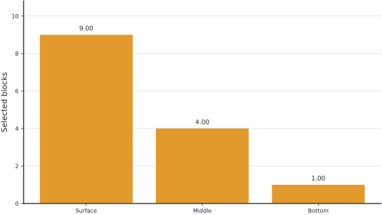

14 Open-Pit Block Selection
Based on Opencast mining, Section 12.14 of Williams (2013). New 14-block, three-level mine with explicit support dependencies; replaces the source geometry and financial data. The results below solve the stated instance and are not presented as the numerical answer to an unmodified textbook problem.
14.1 Problem Statement
Consider a three-level pit. The surface is a 3×3 grid labeled S00 through S22; the middle level is a 2×2 grid M00 through M11; the bottom block is B. Extracting middle block Mij requires surface blocks Sij, S(i+1)j, Si(j+1), and S(i+1)(j+1). Extracting B requires all four middle blocks. Surface-block net values (revenue minus extraction cost), row by row, are [-3,-4,-2], [-5,-3,-4], [-2,-4,-3] thousand USD. Middle net values are [6,8], [5,7], and the bottom value is 18. Choose which blocks to extract to maximize total net value. There is no requirement to extract any block and no production-capacity limit.
14.1.1 Block values
| Block | Net value (1000 USD) |
|---|---|
| S00 | -3 |
| S01 | -4 |
| S02 | -2 |
| S10 | -5 |
| S11 | -3 |
| S12 | -4 |
| S20 | -2 |
| S21 | -4 |
| S22 | -3 |
| M00 | 6 |
| M01 | 8 |
| M10 | 5 |
| M11 | 7 |
| B | 18 |
14.2 Model Formulation
Binary \(x_b\) indicates extraction of block \(b\). For each precedence pair \((b,p)\), where upper block \(p\) must be removed before lower block \(b\),
\[x_b\le x_p,\qquad \max\sum_b v_bx_b.\]
The objective includes negative-value overburden. A profitable deep block cannot be selected independently of the material above it. This is a maximum-weight closure formulation; the MILP is small enough to verify by enumerating all subsets.
All decision variables and units refer to the problem statement above. Continuous variables are nonnegative unless explicitly stated otherwise; binary and integer domains are specified in the equations and code.
14.3 Pyomo Implementation
The following Python implementation uses Pyomo and HiGHS. Run from the workbook root so that the models package and shared helpers are importable. The shared solver and audit functions check optimal termination before loading values, then verify every active constraint, variable bound, and integer domain. Any imported earlier-chapter model supplies the data and balances already explained there.
The full source is problem14.py. To solve and print this problem independently:
~/.venvs/optim/bin/python -m models.common 14import itertools
import pyomo.environ as pyo
from models.common import frame
VALUES = {
f"S{i}{j}": v
for i, row in enumerate([[-3, -4, -2], [-5, -3, -4], [-2, -4, -3]])
for j, v in enumerate(row)
}
VALUES.update(
{f"M{i}{j}": v for i, row in enumerate([[6, 8], [5, 7]]) for j, v in enumerate(row)}
)
VALUES["B"] = 18
PRECEDENCE = [
(f"M{i}{j}", f"S{i + di}{j + dj}")
for i in range(2)
for j in range(2)
for di, dj in itertools.product([0, 1], repeat=2)
] + [("B", f"M{i}{j}") for i, j in itertools.product(range(2), repeat=2)]
def build():
m = pyo.ConcreteModel()
m.x = pyo.Var(list(VALUES), domain=pyo.Binary)
m.slope = pyo.Constraint(PRECEDENCE, rule=lambda m, b, p: m.x[b] <= m.x[p])
m.obj = pyo.Objective(
expr=sum(v * m.x[b] for b, v in VALUES.items()), sense=pyo.maximize
)
return m
def check(m):
names = list(VALUES)
best = 0
for bits in itertools.product([0, 1], repeat=len(names)):
chosen = dict(zip(names, bits))
if all(chosen[b] <= chosen[p] for b, p in PRECEDENCE):
best = max(best, sum(VALUES[b] * chosen[b] for b in names))
assert abs(pyo.value(m.obj) - best) < 1e-6
def tables(m):
return {
"blocks": frame(
[[b, v, round(pyo.value(m.x[b]))] for b, v in VALUES.items()],
["Block", "Net value (thousand USD)", "Extract"],
)
}
def plot(m):
return (
["Surface", "Middle", "Bottom"],
[
sum(pyo.value(m.x[b]) for b in VALUES if b.startswith(prefix))
for prefix in ["S", "M", "B"]
],
"Selected blocks",
)
# Solve, audit constraints, and run domain-specific checks.
from models.common import solve, audit
model = solve(build())
audit(model)
check(model)
for name, result_table in tables(model).items():
print(name)
print(result_table.to_string(index=False))14.4 Optimal Solution
The solver reports optimal termination. The objective is 14 thousand USD (maximize). The largest violation across active constraints, variable bounds, and integer domains is 0.00e+00 in the corresponding model units. The problem-specific checks also pass. These checks establish numerical consistency with the stated model, not the validity of its assumptions for a real facility.
14.4.1 Blocks
| Block | Net value (thousand USD) | Extract |
|---|---|---|
| S00 | -3 | 1 |
| S01 | -4 | 1 |
| S02 | -2 | 1 |
| S10 | -5 | 1 |
| S11 | -3 | 1 |
| S12 | -4 | 1 |
| S20 | -2 | 1 |
| S21 | -4 | 1 |
| S22 | -3 | 1 |
| M00 | 6 | 1 |
| M01 | 8 | 1 |
| M10 | 5 | 1 |
| M11 | 7 | 1 |
| B | 18 | 1 |

Tables round numerical values for reading; feasibility checks use the original solver values. Multiple optimal decisions may exist. Machine-readable result records the solver status and package versions. Figure-generation code is in figures/workbook.py.
14.5 Brief Discussion
The chosen pit contains 14 blocks and earns 14.00 thousand USD after including all selected negative-value overburden.
A negative-value block can be part of the optimal pit because it enables valuable deeper extraction. Selecting only positive-value blocks violates the slope dependencies. Experiment: lower the bottom-block value until it is no longer worth opening the deepest level.